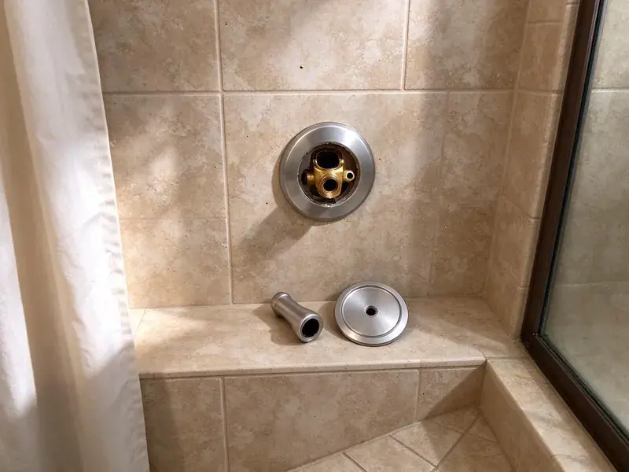

Bathroom Plumbing in West Jordan, UT
When your bathroom plumbing acts up in West Jordan, UT, you need fast, reliable help. BPK Plumbing provides comprehensive services to keep your system running smoothly.
- Fast Local Service
- Prompt Local Service
- Guaranteed Work
- Guaranteed Work

Your Trusted Bathroom Plumbing Experts in West Jordan, UT.
Don't let plumbing problems disrupt your home. Contact BPK Plumbing for prompt help.
Your Local Choice for Bathroom Plumbing in West Jordan, UT
BPK Plumbing knows that bathrooms see heavy daily use and that water quality affects how long fixtures last. Utah water is among the most mineral-heavy in the country in many areas, and scale builds up quickly in water heaters, faucets and appliances. Scale builds up in cartridges, aerators and showerheads, and flappers break down from chlorine. We repair what can be repaired and recommend replacement when it saves you money.
Our expertise includes:
- Precise toilet repair and replacement
- Toilet repair, replacement and new installation including wax ring and flange
- Shower valve, tub spout and sink drain replacement inside finished walls

Additional Bathroom Plumbing Services in West Jordan, UT
From toilets to showers, our bathroom plumbing team in West Jordan, UT repairs, installs, and replaces every fixture with clean, code-compliant work.


Customers
Why Choose BPK Plumbing for Bathroom Plumbing in West Jordan, UT?
Our plumbers carry common parts for the most popular fixture brands. That means faster repairs and fewer return trips.
- Certified Pros, Our plumbers are licensed, insured, and regularly trained on the latest plumbing techniques and codes.
- Clear Pricing, You get upfront, honest quotes with no hidden fees, so you know what to pay.
- Lasting Repairs, We use high-quality parts and proven methods so our repairs stand the test of time.
Citywide Coverage
We provide bathroom plumbing services in every neighborhood of West Jordan, for homes, condos and businesses. Most repairs can be scheduled the same or next day.
Experienced Team
Our team is trained in both repair and installation, so they can fix a cartridge or set up a new shower system. They explain options in plain language.
Safety-First Approach
BPK Plumbing puts a priority on the safety of your home and family. Our plumbers follow strict safety protocols and make sure all bathroom plumbing work, including gas lines for water heaters, meets or exceeds all local regulations.
Trusted Certified West Jordan Plumbing Services Professionals
At BPK Plumbing, we take pride in providing certified plumbing services throughout West Jordan, UT. Backed by leading industry credentials, our experienced plumbers combine technical skill with genuine customer care. Whether it is repair, installation, or maintenance, we follow strict safety and quality standards to deliver lasting results you can trust.
Call Us Now PHCC Plumbing Contractor Recognition
PHCC Plumbing Contractor Recognition Better Business Bureau (BBB) Accreditation
Better Business Bureau (BBB) Accreditation Angi Certified Pro
Angi Certified Pro ISO 9001 Quality Management Certification
ISO 9001 Quality Management CertificationReliable Bathroom Plumbing Services in West Jordan, UT
Commercial Bathroom Plumbing and Urinal Installation in West Jordan, UT
Businesses need durable restroom fixtures that handle heavy use. We install and repair commercial toilets, flushometers, urinals and ADA-compliant sinks and faucets. We work with Sloan, Zurn and other commercial brands. Work can be scheduled after hours to avoid disrupting customers and staff.

Shower & Bathtub Plumbing in West Jordan
From low water pressure to drainage issues, shower and bathtub plumbing problems require prompt attention. BPK Plumbing provides comprehensive shower repair, including fixing diverters, clogged drains, and leaky showerheads. We also specialize in shower installation and bathtub faucet replacement, upgrading your bathroom while making sure all connections are secure and code-compliant in West Jordan.
Bathtub Faucet and Drain Replacement in West Jordan
Tub faucets and spouts wear out from mineral buildup and daily use. We replace tub spouts, diverters and valve trim and can upgrade older two-handle valves to single-handle pressure-balance units. We also replace tub drains and overflow assemblies to fix leaks below the tub. These repairs help prevent water damage to the ceiling below.
Toilet Repair in West Jordan
A running or leaking toilet can waste hundreds of gallons a day. We replace worn flappers, fill valves and flush valves, and we fix loose or rocking toilets by repairing the flange and installing a new wax ring. Chlorine in treated water breaks down rubber parts, so flapper replacement is a common repair. We also repair cracked tank bolts and leaking supply lines.
Emergency Bathroom Plumbing in West Jordan
Plumbing emergencies rarely happen at convenient times. For sudden issues like a burst pipe behind your shower wall or a severely clogged toilet that is overflowing, BPK Plumbing offers emergency bathroom plumbing services in West Jordan. Our quick response team is equipped to diagnose and resolve critical problems, preventing further water damage and restoring your bathroom with minimal disruption.
Toilet Repair and Installation in West Jordan
A running toilet can waste hundreds of gallons of water per month, driving up your utility bills. BPK Plumbing provides skilled toilet repair for common issues like faulty flappers, fill valves, and leaks at the base. We also handle new toilet installations, whether you are upgrading to a high-efficiency model or replacing an old, inefficient unit. Our team provides proper sealing and stable mounting for long-lasting performance in West Jordan homes.
Faucet Repair and Replacement in West Jordan, UT
Dripping faucets are more than just annoying, since they can lead to significant water waste and contribute to mildew growth. Our plumbers are skilled at repairing all types of bathroom faucets, including compression, cartridge, ceramic disc, and ball faucets. If a repair is not cost-effective, we offer expert faucet replacement, helping you choose and install a new fixture that fits your bathroom style and budget in West Jordan, UT. We work with brands like Moen, Delta, and Kohler.

Toilet Repair & Installation in West Jordan
A running, leaking, or clogged toilet is more than an annoyance, since it wastes water and can lead to structural damage. BPK Plumbing offers complete toilet repair, addressing issues like faulty flappers, fill valves, and blockages. We also provide professional toilet installation and replacement services for new builds or upgrades, with proper sealing and water efficiency for your West Jordan home.
Expert Bathroom Plumbing Near Me in West Jordan, UT
If you are searching for bathroom plumbing near me, you want someone who can fix the problem quickly and cleanly. Our local plumbers arrive with the parts most bathroom repairs need. We give you a price before we begin.
When you search for "bathroom plumbing near me" in West Jordan, UT, BPK Plumbing is your local answer. We pride ourselves on being a neighborhood service, always ready to send a qualified plumber to your location quickly.
BPK Plumbing at a Glance
- Licensed and insured plumbers serving West Jordan, UT
- Same-day appointments and 24/7 emergency response
- Upfront, flat-rate pricing before work begins
- 4.8-star rated by 470+ Utah customers
West Jordan Map
West Jordan Information
- Population
- 114,908
- Area codes
- 801/385/435
- Service area
- West Jordan and communities within 40 miles
- Nearby
- South Jordan, Taylorsville, West Valley City, Murray
Utah water is among the most mineral-heavy in the country in many areas, and scale builds up quickly in water heaters, faucets and appliances. Proper bathroom plumbing helps prevent issues like leaking supply lines, worn valves and mineral deposits that accelerate fixture wear in West Jordan, UT homes.
Expert Services
Trust our professionals for reliable BPK Plumbing solutions in West Jordan, UT.
Our Specialized Plumbing Services in West Jordan, UT
At BPK Plumbing, we provide a complete range of plumbing services across West Jordan, UT. From leak detection to full system installations, our team ensures fast, precise, and affordable service for both residential and commercial properties. Explore our core services below:


How Our Bathroom Plumbing Process Works in West Jordan, UT
Our streamlined process delivers efficient and quality service from your first call to the completed job.
Request a Quote
Reach us at (385) 543-4073 or through our website to describe your bathroom plumbing issue. We will gather the needed details to provide you with an initial assessment.
On-Site Assessment
A certified BPK Plumbing plumber will arrive at your West Jordan home to conduct a thorough inspection. We accurately diagnose the problem and discuss the best course of action with you.
Expert Service
Once you approve the plan, our team proceeds with the repair or installation using quality parts and techniques. We make sure your bathroom plumbing is restored to full function.
Frequently Asked Questions About Bathroom Plumbing in West Jordan
The cost of bathroom plumbing repair in West Jordan can vary widely depending on the issue. A simple faucet repair might be $150 to $300, while a more involved toilet replacement could range from $400 to $800, including the new fixture. We provide a detailed estimate after diagnosing the problem.
We service and install all major brands including Kohler, Moen, Delta, American Standard, TOTO, Pfister, and Grohe. Our plumbers are familiar with the specific parts and repair techniques for each manufacturer, so you get quality service.
The lifespan of bathroom plumbing fixtures varies, with toilets lasting 20 to 50 years, faucets 15 to 20 years, and shower valves 20 to 30 years. However, factors like water quality, frequency of use, and maintenance can affect these timelines. Utah water is among the most mineral-heavy in the country in many areas, and scale builds up quickly in water heaters, faucets and appliances. Harder water can sometimes lead to earlier wear on internal components.
Replacing a standard shower head is often a simple DIY task. However, if you are experiencing low water pressure, leaks from the wall, or plan to install a complex multi-function shower system, it is best to call a professional for proper installation and to prevent leaks.
BPK Plumbing services and installs all major brands of bathroom fixtures. This includes well-known names like Kohler, American Standard, Moen, Delta, TOTO, and Sterling. We can also work with less common or specialty brands and find the right parts for your specific needs.
For most West Jordan homes, an annual or twice-yearly professional drain cleaning is sufficient to prevent major clogs, especially if you have long hair or use a lot of soap. Utah water is among the hardest in the country in many areas, and scale builds up quickly in water heaters, faucets and appliances. Mineral buildup can also narrow pipes over time.
Many homeowners can replace a simple faucet. If the shutoff valves are old, the drain leaks or the faucet is wall-mounted, a plumber can save time and prevent leaks.
Fixture repairs and like-for-like replacements usually do not need a permit. Moving drains, adding fixtures or remodeling often does. We take care of permits when required.
What People Are Saying About Our Plumbing Experts?

Robert G.
The trenchless sewer replacement saved our front yard. They walked us through the camera inspection footage first so we knew exactly what we were paying for.
Sewer Line Replacement · Murray, UT
Patricia H.
We had a slab leak that two other companies could not find. BPK Plumbing located it in under an hour, explained our options, and the price matched the quote to the dollar.
Slab Leak Repair · Murray, UT
Daniel K.
A pipe burst at 11 pm and they actually answered. The plumber showed up within the hour, shut everything down, and had us back to normal the next morning. Could not ask for more.
Emergency Plumbing · Sandy, UT
Laura S.
I scheduled a water heater replacement, and the team made the process smooth and affordable. The new unit works perfectly, and they cleaned up after completing the job.
Water Heater Replacement · West Valley City, UT
Emily R.
I called BPK Plumbing for plumbing repair, and the technician was fast, polite, and thorough. They explained the problem clearly and fixed it the same day. I will definitely hire them again. Highly recommended!
Plumbing Repair · South Jordan, UT
Mark T.
When our office needed drain cleaning, BPK Plumbing provided quick, reliable service. The plumber arrived on time and made sure every drain flowed perfectly before leaving. Very satisfied.
Drain Cleaning · West Jordan, UT